The Everything Frame!
Presentation Link:
 |
 |
 |
| Live Streams | Video | Gallery |
A Workshop in Five Parts:
- What is a Raspberry Pi?
- Kit Components
- OS Installation
- Assembly
- Software & Scripting
Part 1: What is a Raspberry Pi?
In brief, The Raspberry Pi is a:
- tiny, full-featured computer.
- platform for creating with code and electronics.
- "System on a Chip" ideal for embedded systems.
Source: https://simpleweb.co.uk/10-years-of-raspberry-pi-an-interview-with-creator-eben-upton/To build an art installation, measure rainfall, make a light-up dress – none of those things sound like computer science but they’re all things that computers can help you do – that’s the message we’re really trying to get across.
- Eben Upton
Unable to Meet DemandBetween commercial clients, educators and makers, there aren't enough for everyone. |
 |
The retail price is $35

Source: https://www.raspberrypi.com/news/production-and-supply-chain-update/Right now we feel the right thing to do is to prioritise commercial and industrial customers – the people who need Raspberry Pis to run their businesses – we’re acutely aware that people’s livelihoods are at stake.
- Eben Upton
Part 2: Kit Components
Raspberry Pi 3A+
The heart of it all. Smaller than the Pi 4, it has a 64-bit processor, wi-fi and Bluetooth.
And, of course, HDMI out.
Check out the product page.

10.1 inch IPS Display
Designed for the Pi, this includes an HDMI connector, speakers, and a little stand.
It's also a touch screen!

SD Card
This will contain the operating system, applications, and all the media on our frames.

5V 2.5A Power Supply
Just what it sounds like.
The Raspberry Pi 3A+ can also be powered by a micro USB cable connected to a computer or USB wall adapter.

Optional: Battery
A usb battery pack works great for powering the frame.
It usually lasts between 6 and 8 hours on a charge.
Optional: Frame & Mat
The whole assembly is small enough to fit into a deep frame.
Mat dimensions:
8⅞ in (225mm) x 5⅛ in (130mm)
It doesn't have to be pretty:
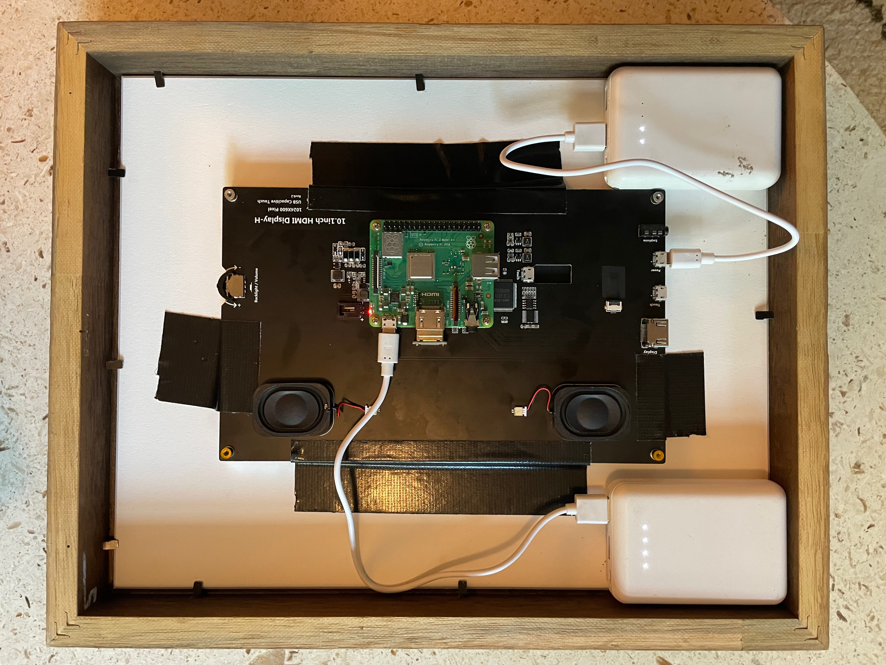Part 3: OS Install
Download the Imager

Choose an OS
Select:
Raspberry Pi OS (other)
Then select:
Raspberry Pi OS Lite (Legacy)

Select SD Card
Look for your SD card in the pop-up window. It may have a generic name.

Name your Pi & create a user
Click on the gear icon.
Create a hostname, a username, password, and add WiFi and locale information.

Write the OS
Hit the write button. Once complete, eject the SD card and insert it into your Pi.
Plug it in and turn it on – it's alive!

SD Card

Happy Lights!

Meet the Terminal
Mac: press command space, type "terminal"
Windows: click the search icon, type "terminal"

Your terminal will look somewhat like this:

Notes on the Terminal and command line:
If you're new to working with computers this way, the terminal and command line can be intimidating.
Rather than pointing and clicking on folders and files, we use text based commands to navigate through the system, create files and launch applications.
We'll use the terminal to navigate both our local computers, and the Raspberry Pi. You may find it useful to open two terminal windows or tabs.
Notes on prompts:
In this guide, we'll use different colors and prompts to distinguish between commands for your computer, and those for the connected Pi.
% This prompt indicates a command entered on your computer.
$ This indicates a command entered on the Pi.
The colors in your terminal may be different, but the commands we'll use will be the same.
Let's get started:
Note: don't copy the prompt (% or $) when writing commands, and replace "username@hostname.local" with the names created while configuring the SD card. Log in with the password you created and accept the new connection.
What just happened??
We used the ssh command to open a connection to the raspberry pi.
After logging into the Pi (note the prompt change!) we used the sudo command to launch the raspi-config application.
Don't worry if this still feels a bit abstract.
Raspberry Pi configuration:

Expand the filesystem:
Tap down to open "Advanced Options" then select "Expand Filesystem" from the menu.
Select "Finish" and reboot.

After rebooting, we need reconnect to the Pi and update the software:
Note: always replace "username@hostname.local" with your username and hostname.
Congratulations! You've just configured and connected to a Raspberry Pi.
We'll return to the terminal and command line to install software after assembling the frame.
Part 4: Assembly!
Front

Back

1: This Bag

2: HDMI Connector

3: Standoffs

4: Connect Pi

5: Little Screws

6: This Cable

7: Connect Cable

8: Speakers

9: Adapter

10: Attach Legs
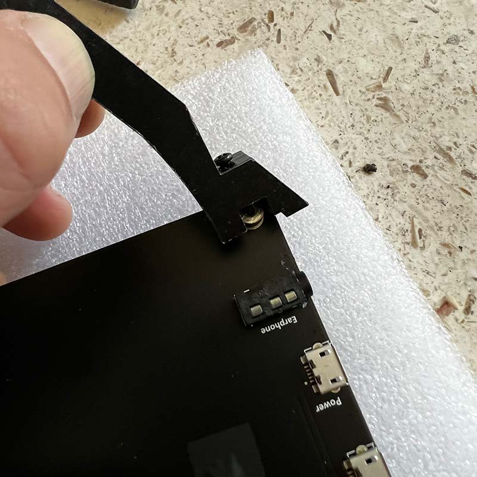Part 5: Software!
Back to the terminal:
Note: As ever, remember to replace "username@hostname.local" with your username and hostname.
Are you creating a vertical frame? You'll need to tweak a setting:
config.txt

What just happened??
We used the sudo command to launch the application nano, a text editor installed with Raspberry Pi OS.
We're using nano to open and edit the config.txt file located in the etc directory.
Use the arrow keys to navigate to the bottom of the file and add this:
Press "control O" to "write Out" and save your changes, then press "control X" to "eXit" nano.
Tap down to open "Display Options" then select "Resolution" from the menu. Choose DMT 85, then exit and reboot. $ streamlink --player-continuous-http --player omxplayer --fifo --player-args "--live --win \"0 0 1280 720\" {filename}" http://www.ustream.tv/channel/17074538 480p $ streamlink --player-continuous-http --player omxplayer --fifo --player-args "--live --orientation 90 --win \"0 0 720 1280\" {filename}" http://www.ustream.tv/channel/17074538 480p
#!/bin/bash We used the touch command to create a new, empty fille named video-loop. Then we used the sudo command to open that file with the nano editor.
#!/bin/bash We used the chmod command to modify the permissions of the video-loop file. The u + x modifier makes the script executable by the logged in user (you!). We navigated to the picframe-data directory, then to the config directory within it. Then we used sudo nano to open and edit the configuration.yaml file. Remove the default values so no date is displayed. Remove the default values so no text is displayed. Change the default value to False to remove the automatic mat. This is near the bottom of the file. Change the default to True. As before, press "control O" to save your changes and "control X" to exit nano. Reboot and log in to your Pi, then launch picframe again. Look at the screen of your frame when it boots. You should see an IP address listed. Make a note of it! Enter the IP address of your Pi followed by :9000
#start picframe Note: use your username rather than "username". Again, "contol O" to save, "control X" to exit nano.
$ sudo reboot Picframe should start automatically.
ssid="Your Network" Save the file and shut down. To change the network and password, we need to manually add a wpa_supplicant.conf file to the SD card. Get started by powering down your Pi, removing the SD card and opening it on your computer – it will appear as "boot". With TextEdit on a Mac or Notepad on Windows, open a new plain text file.
country=us Replace Network_Name and Network_Password with your wifi network info. Save the file to your SD card as wpa_supplicant.conf (make sure there's .txt or other extension.) Insert the SD card back into the Pi and restart. Your frame should automatically connect to your network and launch picframe.Once more, into raspi config
Change screen resolution:
Resolution Settings
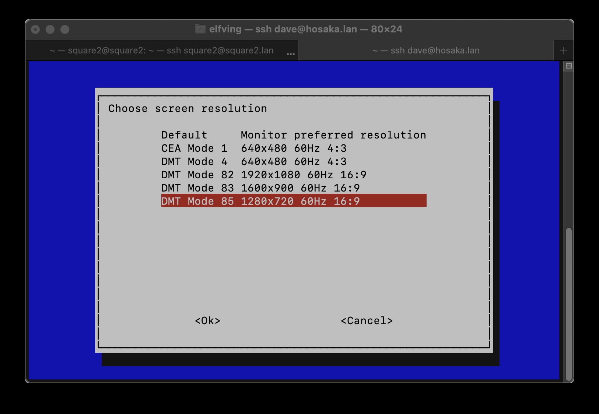
Let's try it!
Let's try it (vertical)!
Let's make a script for this:
Empty...for now

Copy this:
while true
do
streamlink --player-continuous-http --player omxplayer --fifo --player-args "--live --orientation 90 --win \"0 0 720 1280\" {filename}" http://www.ustream.tv/channel/17074538 480p
done
Save and exit nano:
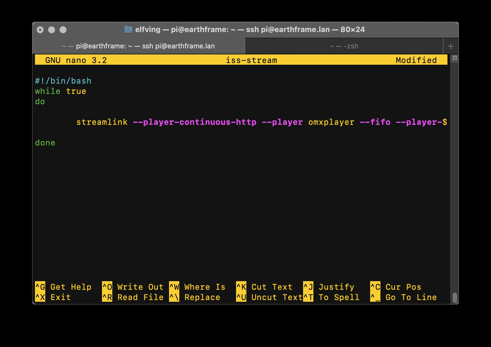
Make it executable:
Let's upload a video to the Pi:
Note: run this command on your computer, not the Pi.
If you drag and drop your file onto the terminal, it will fill in the file path for you. Be sure to include the : at the end of the command.scp in the terminal:
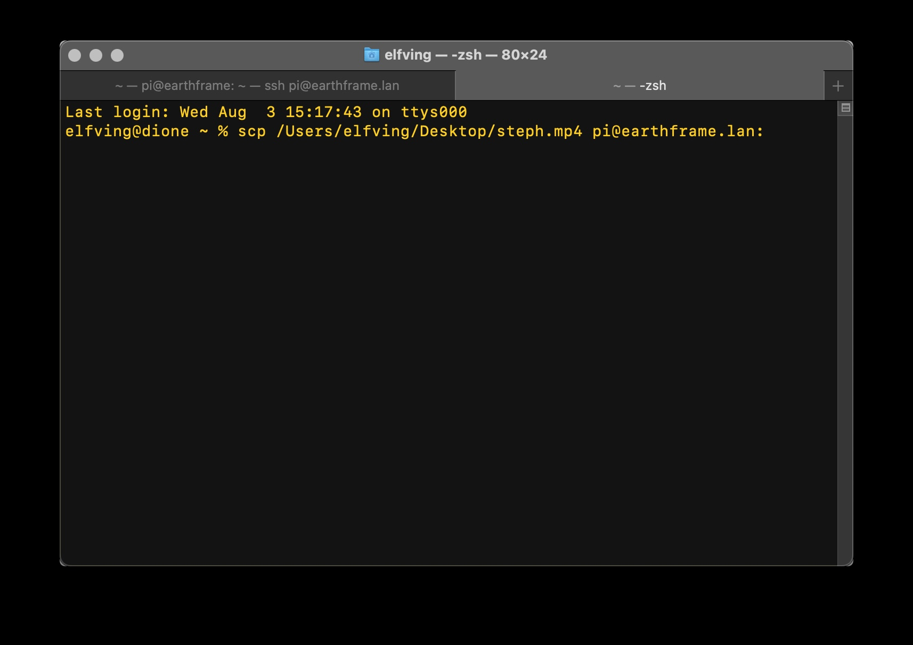
Open your video with Omxplayer:
Note: After uploading the video to your Pi, type "ls" to see it listed in the home directory of the Pi. Replace "file.mp4" with the name of your file to loop it. Press "control C" to stop the video.Let's make a script for looping video:
Empty...for now

What just happened??
Copy this into the file.
while true
do
omxplayer --loop /home/username/file.mp4
done
Replce "username" with your username. Press "control O" to save the file, and "control X" to exit nano.Make the script executable:
Note: press "control C" to stop the video loop.What just happened??
Let's upload a Pictures directory:
Note: Run this command on your computer. Be sure to name your directory of images "Pictures".
Drag the Pictures folder onto the terminal, and replace "username@hostname.local" with your username and hostname. Don't forget the : at the end.scp -r in the terminal:
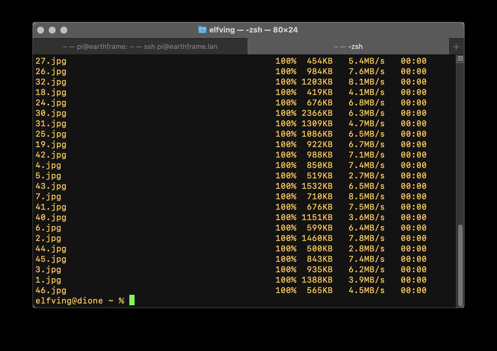
Installing Picframe
Note: after uploading your Pictures directory from your computer, remember to run these commands on the Raspberry Pi.What's with the mats? Let's change the Picframe configuration:
configuration.yaml:
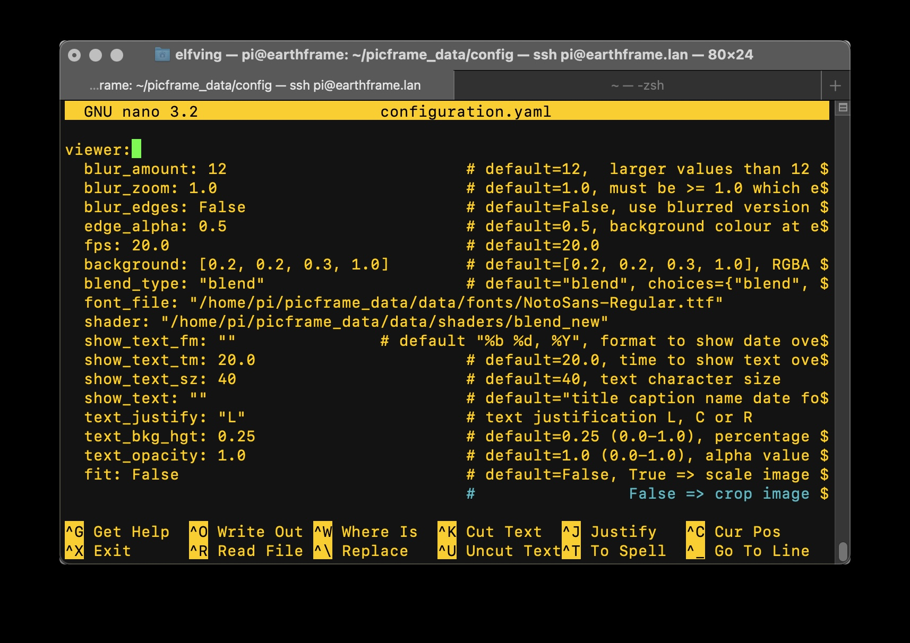
What just happened??
Suggested Configuration:
Save your changes and reboot.
Take note of your IP address.
Restart picframe. You should see your config changes!
Open a web browser
Picframe Remote:
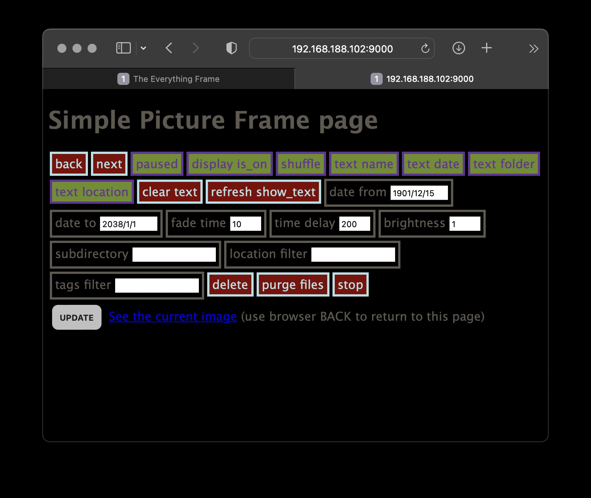
Let's launch picframe at startup:
/etc/rc.local
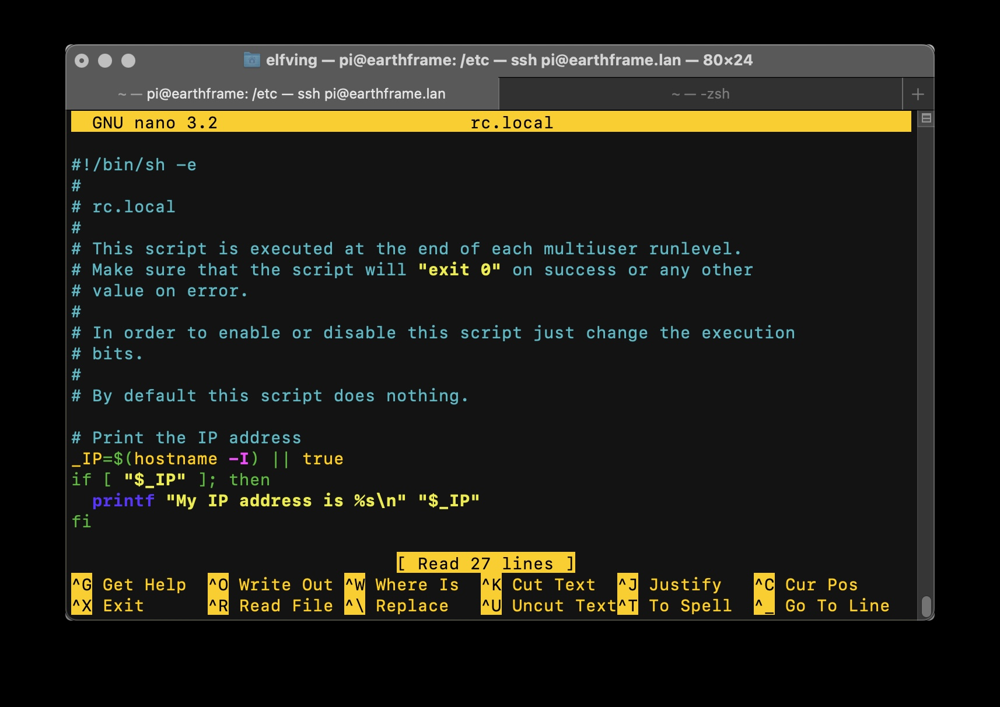
Add this to rc.local, just above the "exit 0" line at the bottom of the file.
sudo -u username picframe &
Reboot!
Once more thing - your home network:
If your frame is configured for the class wifi network, we'll need to edit this file so it works for you at home.wpa_supplicant.conf
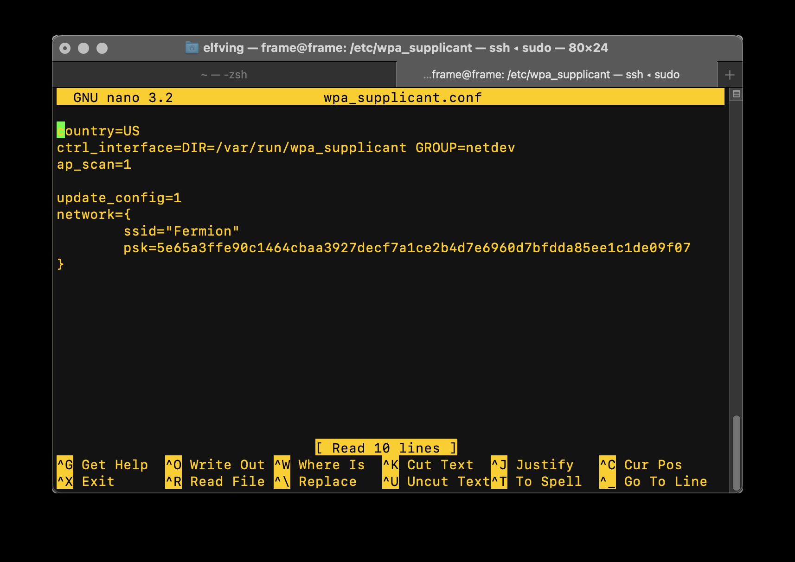
Replace the existing values with your home wifi login and password:
psk="Your Password"What if I'm not already connected to the Pi?
The contents of your "boot" SD card:
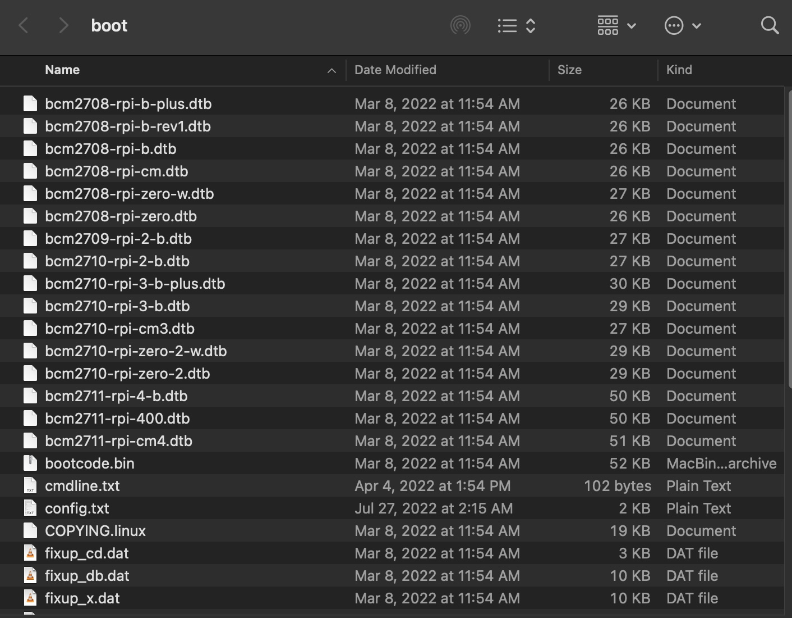
Create a new plain text document.
If the document has any text styling, it won't work with your Raspberry Pi.Copy this into the plain text file.
update_config=1
ctrl_interface=/var/run/wpa_supplicant
network={
scan_ssid=1
ssid="Network_Name"
psk="Network_Password"
}Your file should look something like this:
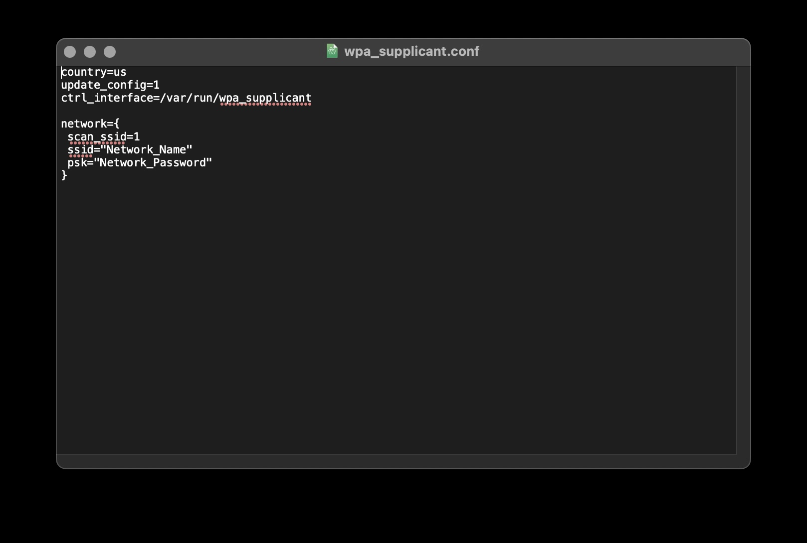
That's it!
The End!